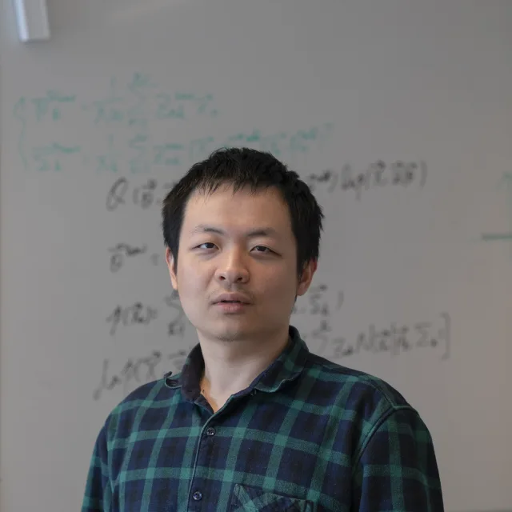

Physics for visual AI
Ground perception, generation, and prediction in the principles that govern the physical world.
IJCV · Special Issue
Grounding Foundation, Generative, and World Models in Physical Principles
A special issue of the International Journal of Computer Vision

01 / The special issue
Visual foundation models, vision-language models, diffusion models, and world models have expanded what computer vision can do. Without explicit models of image formation and scene physics, their outputs can look convincing while violating physical constraints, failing across sensors, or hiding uncertainty in inverse problems.
The special issue welcomes research that uses physical priors to improve visual perception and generation, or applies pretrained and generative models to reconstruction, rendering, restoration, and computational imaging. The scope spans theory, methods, empirical studies, and benchmarks that advance computer vision.
Ground perception, generation, and prediction in the principles that govern the physical world.
Use learned priors to solve imaging and inverse problems while respecting physical measurements.
02 / Research directions
Representative topics, not an exhaustive list. Interdisciplinary contributions are welcome.
Use priors from image formation, geometry, illumination, materials, and sensors to train, adapt, and evaluate visual and vision-language foundation models and improve their reasoning.
Apply physical constraints to diffusion models and AI-generated content, including controllable generation, inverse rendering, relighting, and restoration.
Build interactive environments that respond to actions and test perception under controlled physical conditions.
Acquire, simulate, augment, and enhance data while preserving physical properties. Relevant modalities include spectral, event, light-field, time-of-flight, and LiDAR sensing.
Measure physical consistency and uncertainty, diagnose hallucinations, and assess performance in adverse weather, material recognition, and real deployments.
04 / Call for papers
Open to the research community. Participation in a related workshop is not required.
T.B.A.
T.B.A.
05 / Editorial team
Connecting expertise in computer vision, computational imaging, and physically grounded AI.

Utrecht University
National Institute of Informatics
Hangzhou Dianzi University
International Digital Economy Academy (IDEA)
University of Amsterdam
Lead Guest EditorBeijing Institute of Technology
International Digital Economy Academy (IDEA) / University of Illinois Urbana-Champaign
NVIDIA
06 / Get in touch
Special issue contact details are T.B.A.